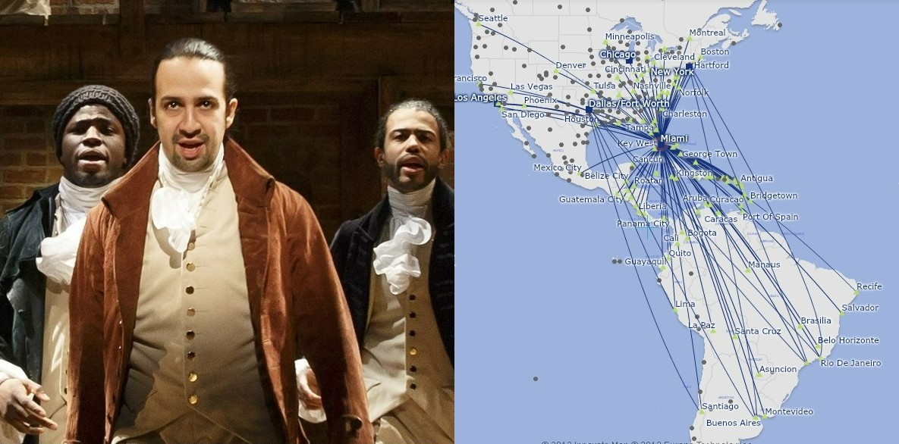

This web application was created as part of the UC Berkeley Data Science Society Datathon for Social Good. I look at the likelihood a person
encounters a COVID-19 positive person based on their county and the number of likely interactions they have on any given day. Other than this metric
I also look at the number of active cases (Total Cases - Total Recovered - Total Deaths) based on a user-specified number of days. Other visualizations
include a dynamic choropleth of the average rate of change of COVID-19 cases, the cumulative COVID-19 cases in each county, as well as a novel clustering
analysis of each county in the United States. I won 1st place overall.

As project lead, I led a group of five others to create a comprehensive article for DataRes at UCLA. This article looks at California wildfire growth over the last decade, and the role climate change has played in exacerbating the current wildfire crisis.
What amazed me while writing this article was how a select few number of counties in California account for so much of the annual wildfire destruction. My team and I employed a variety of geospatial python libraries in order to best capture the existing patterns
and characteristic attributes of California wildfires. All visualizations were created from scratch using CAL FIRE data and APIs.
This web application was made with my friends as part of the Texas A&M University 2020 Datathon.
Our final product was a heroku web application to gauge the best city for a user based on specified metrics and sklearn's davies_bouldin_score attribute.
After gauging the optimal cities for a user, we visualized these locations using geospatial mapping libraries. In order to capture what these locations look like we web-scraped multiple images for over 300 cities in order to display the beauty of a user's ideal city.
We won 3rd place in our category.
In this project my team built a virtual assistant to convey COVID-19 information audibly and over SMS.
We noticed a gap in catering for those with visual impairments and addressed this issue with the tremendous capabilities of speech recognition.
We essentially created a virtual assistant that can perform a variety of tasks. These tasks range from answering questions about the virus using an AI-powered chatbot, to enabling quick-and-easy
dissemination of real-time COVID-19 county-specific updates.

The aim of this datathon was to gather eCommerce insights and leverage analytics to diagnose business strengths in terms of customer behaviors.
My team was charged with analyzing visualizations that projected customer lifetime value (LTV) over 5 year and 10 year periods.
By analyzing specific quantiles of our subset, we came to the conclusion that our client (the eCommerce company in question) should target higher spenders and
incentivize to those customers who fall in the top 60% of high-spenders. We won 2nd place overall.

In an effort to better understand how powerful search engines such as Google function, I built the skeleton of the PageRank algorithm from scratch.
Having created this algorithm I used it to recognize important characters in the famous Broadway Play, Hamilton, as well as the most frequented
airports across the globe. PageRank expresses an intuitive idea: important pages are linked to other important pages. As such, I look at how often a
character is mentioned by another character in Hamilton and how often a specific airport is visited in the context of departures/arrivals.